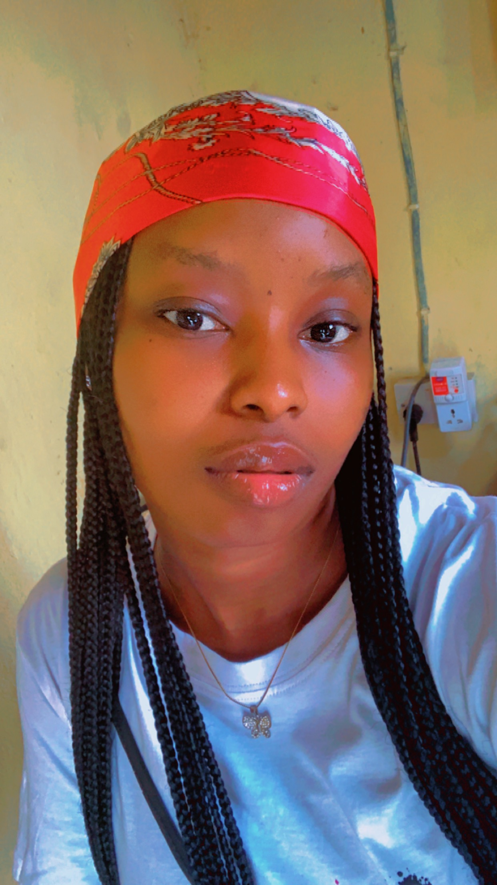

NWACHUKWUKWU VICTORIA

OBJECTIVE
Self-motivated and adaptable developer with applicable database knowledge and coding skills.
organized programmer looking for an opportunity to grow as a developer and support an ambitious
startup technology company. collaborative communicator with relationship building skills.
EDUCATIONAL QUALIFICATION
- Kogi state university anyigba
B.A in Religious Studies
(2019-2024)
- Graceland college idah,kogi state.
(2012-2018)
WAEC & NECO
- Becky nursery primary school idah,kogi state.
(2004-2012)
First leaving certificate
WORK EXPERIENCE
- Website development
(2024)
- Banke Kuku
(2022-2024)
production Team
- Arranging Fabric
- Cutting
- Sowing
- Ironing of clothing
- Hiktaos international school
January 2023 - march 2023
Teaching
I work as a teacher an i taught atvthe upper elementary level of the school.
- Olive Couture
(2022 -2023)
Fashion designer
SKILLS
- Website development
- Fashion designer
- Effective communication
- Teaching skills
- Ability to work in a team
- customer service skills
- Leadership skills